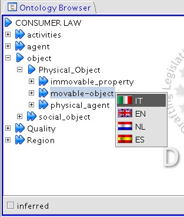

Ontology Browsing
The Ontology Browser panel
in the top-left side of the application shows the language independent domain ontology
class hierarchy in a browsable tree view
Clicking on an ontological class will show the list of classified terms in the Terms Panel

- Right Clicking on an ontological class will show the list of classified terms in the Selected Language in the Terms Panel